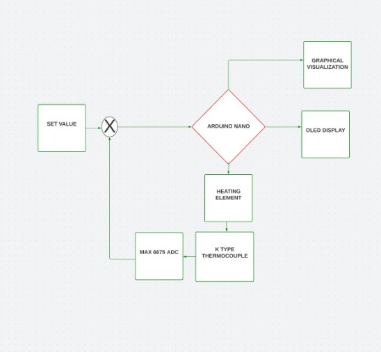
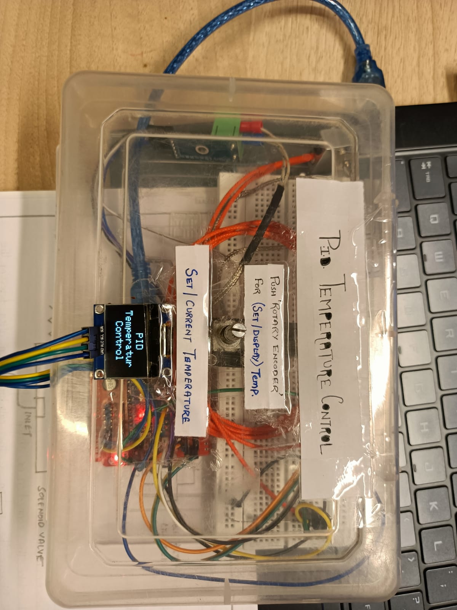
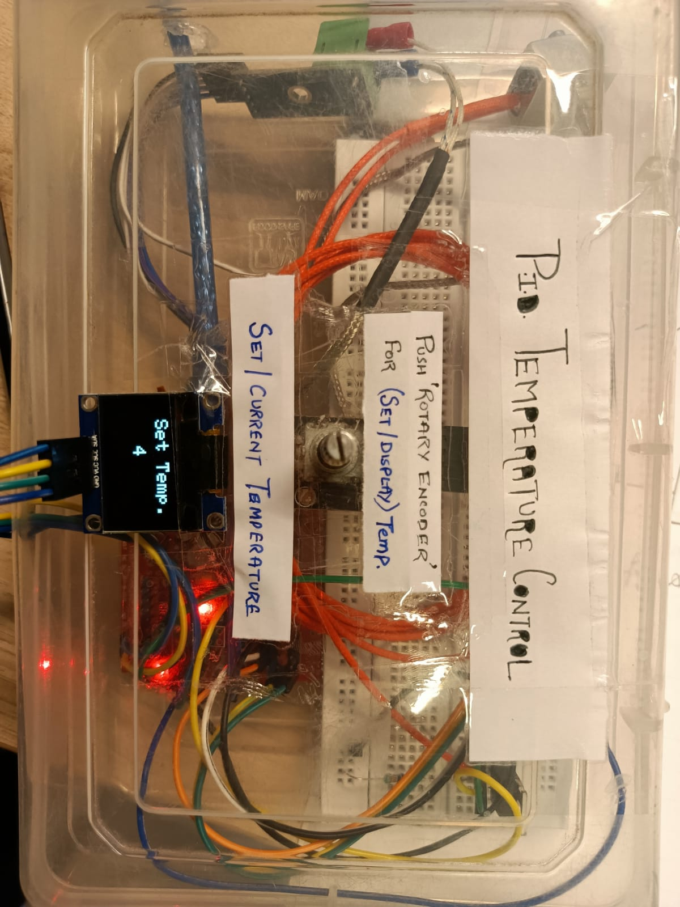
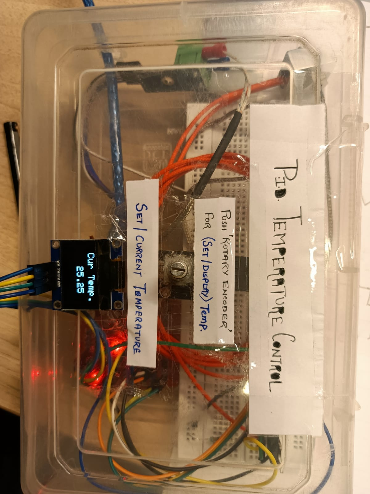
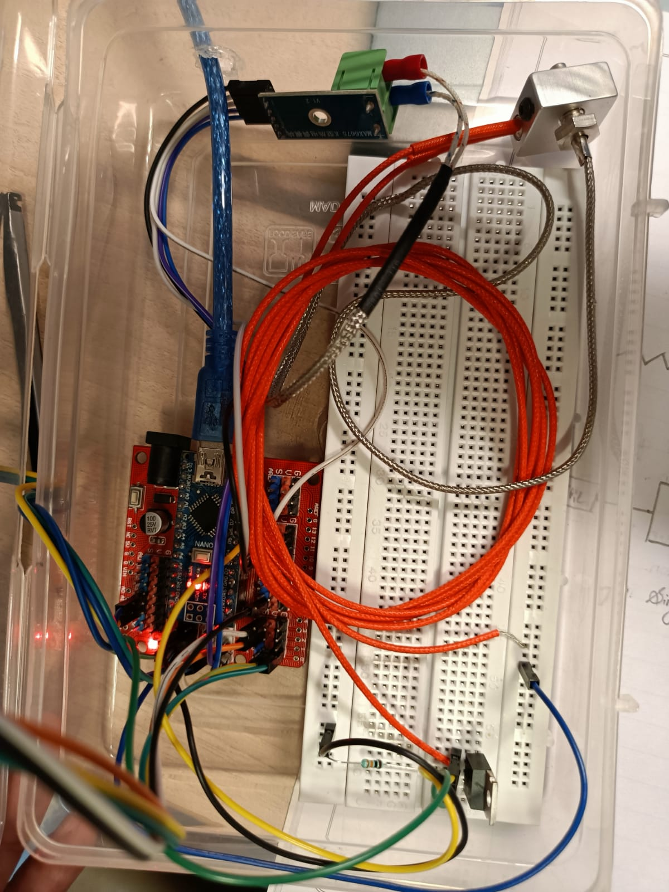

<!DOCTYPE html>
<html lang="en">

<head>
  <meta charset="utf-8">
  <meta content="width=device-width, initial-scale=1.0" name="viewport">

  <title>Chapter -2</title>
  <meta content="" name="description">
  <meta content="" name="keywords">

  <!-- Favicons -->
  <link href="assets/img/favicon.png" rel="icon">
  <link href="assets/img/apple-touch-icon.png" rel="apple-touch-icon">

  <!-- Google Fonts -->
  <link href="https://fonts.googleapis.com/css?family=Open+Sans:300,300i,400,400i,600,600i,700,700i|Raleway:300,300i,400,400i,500,500i,600,600i,700,700i|Poppins:300,300i,400,400i,500,500i,600,600i,700,700i" rel="stylesheet">

  <!-- Vendor CSS Files -->
  <link href="assets/vendor/aos/aos.css" rel="stylesheet">
  <link href="assets/vendor/bootstrap/css/bootstrap.min.css" rel="stylesheet">
  <link href="assets/vendor/bootstrap-icons/bootstrap-icons.css" rel="stylesheet">
  <link href="assets/vendor/boxicons/css/boxicons.min.css" rel="stylesheet">
  <link href="assets/vendor/glightbox/css/glightbox.min.css" rel="stylesheet">
  <link href="assets/vendor/swiper/swiper-bundle.min.css" rel="stylesheet">

  <!-- Template Main CSS File -->
  <link href="assets/css/style.css" rel="stylesheet">

  <!-- =======================================================
  * Template Name: Kelly - v4.7.0
  * Template URL: https://bootstrapmade.com/kelly-free-bootstrap-cv-resume-html-template/
  * Author: BootstrapMade.com
  * License: https://bootstrapmade.com/license/
  ======================================================== -->
</head>

<body>

  <main id="main">
    <div class="section-title">
      <h3>Arduino PID Temperature Controller  </h3>
      <!-- <p>using MAX6675 K-Thermocouple to Digital Converter IC </p> -->
    </div>
    <!-- ======= Portfolio Details Section ======= -->
    <section id="portfolio-details" class="portfolio-details">
      <div class="container">

        <div class="row gy-4">

          <div class="col-lg-8">
            <div class="portfolio-details-slider swiper">
              <div class="swiper-wrapper align-items-center">

                <div class="swiper-slide">
                  
                </div>

                <div class="swiper-slide">
                  
                </div>

                <div class="swiper-slide">
                  
                </div>
               <div class="swiper-slide">
                  
                </div>
                <div class="swiper-slide">
                  
                </div>
                <div class="swiper-slide">
                  
                </div>
                <div class="swiper-slide">
                  
                </div>
              </div>
              <div class="swiper-pagination"></div>
            </div>
          </div>

          <div class="col-lg-4">
            <div class="portfolio-info">
              <h3>Introduction </h3>
              <ul>
                 In 
                this experiment, a PID controller-based heater is used to control the temperature of the hot end of the 
                3D printermaterial efficiently. A rotary encoder is used to set the temperature of the heating block.
                The temperature can also be set via the interface provided by the developed website. The KThermocouple reads out the temperature of the heating block and compares the set and processed 
                value to calculate the error generated. The Arduino Nano is used as a PID Controller for controlling 
                the temperature.
              </ul>
            </div>
            <div class="portfolio-description">
              <h2>  What is a Temperature PID Controller ?</h2>
              <p>
              
          As the name suggests a temperature PID controller deals with temperature, 
         PID temperature control is a closed-loop control algorithm that improves the accuracy of the process. 
         The PID temperature control works using a mathematical formula to calculate
          the difference between the current temperature and setpoint. And then it tries to
          deliver the required power to ensure the target temperature remains constant, this not only reduces environmental
                impact but it also reduces overshoots that can be found in the traditional on-off control mechanism.<br><br>
                To accurately control process temperature without extensive operator involvement, a temperature control system relies upon a controller, which accepts a temperature sensor such as a thermocouple or RTD as input.
                 It compares the actual temperature to the desired control temperature, or setpoint, and provides an output to a control element.<br><br>
                 There are three basic types of controllers: on-off, proportional and PID. Depending upon the system to be controlled, the operator will be able to use one type or another to control the process.
                
              </p>
            </div>
          </div>
          <h3>How does a Temperature PID Controller work?</h3><br>
          <p>
          As in any PID control first, we need to be aware of the
           output or what we want the controller to do, for this project we 
           want to maintain a certain temperature of the heating element 
           (we will set that temperature with the help of the rotary encoder) so to maintain the temperature we need to read out of the temperature, 
           for that we are using a K-type thermocouple, in conjunction with MAX6675 Cold-Junction-Compensated K-Thermocouple to Digital Converter IC that can measure hundreds of degree Celsius without any issues. And the temperature readout from the thermocouple acts as feedback. Now as we have set the temperature we want to achieve and we have a real-time readout of the temperature value the controller can calculate the error value and with the help of proportional integral and derivative control the system can achieve its target, for
           this project we will control a PWM signal with the calculated output value. That is how a Temperature Based PID controller works.</p>
         <h3>  MAX6675 K-Thermocouple IC Working </h3></br>
         <p>
          The function of the thermocouple is to sense a difference in 
          temperature between two ends of the thermocouple wires.
           The thermocouple’s hot junction can be read from 0°C to +1023.75°C.
            The cold end (ambient temperature of the board on which the MAX6675 is mounted)
             can only range from -20°C to +85°C. While the temperature at the cold end fluctuates, the MAX6675 continues to accurately sense the temperature difference at the opposite end. The MAX6675 senses and corrects for the changes in the ambient temperature with cold-junction compensation. The device converts the ambient temperature reading into a voltage using a temperature-sensing diode. To make the actual thermocouple temperature measurement, the MAX6675 measures the voltage from the thermocouple’s output and the sensing diode. The device’s internal circuitry passes the diode’s voltage (sensing ambient temperature) and thermocouple voltage (sensing remote temperature minus ambient temperature) to the conversion function stored in the ADC to calculate the thermocouple’s hot-junction temperature. Optimal performance from the MAX6675 is achieved when the thermocouple cold junction and the MAX6675 are at the same temperature. The MAX6675 includes signal-conditioning hardware to convert the thermocouple’s signal into a voltage compatible with the input channels of the ADC. The T+ and T inputs connect 
          to internal circuitry that reduces the introduction of noise errors from the thermocouple wires.
         </p>
         <h3>Components Required to build a PID Enabled Temperature Controller</h3><br>
         The components required to build the MAX6675 based PID Controlled Heater are listed below, we designed this circuit with very generic components, which makes the replication process very easy.

        <li> Arduino Nano - 1
         <li>128 X 64 OLED Display - 1
        <li> Generic Rotary Encoder - 1
        <li> MAX6675 Module - 1
        <li> K-type Thermocouple - 1
        <li> Breadboard - 1
        <li> Jumper Wires - 1</li></br>
          <h3>Setting of the Temperature</h3></br>
<p> A rotary encoder is utilized to specify the set point temperature. The rotary encoder works in two 
  modes, temperature setting mode and feedback measuring mode. The temperature setting mode will 
  be used to set the temperature by increasing or decreasing the data based on the user’s input and the 
  feedback measuring mode is used to display the feedback value obtained from K-type 
  thermocouple. The temperature can also be set by the interface provided by the website.</p>
  <h3>Setting and maintaining of Temperature</h3></br>
<p>The system consists of a K-type thermocouple and an analog to digital converter, namely MAX6675 
  IC. It can record temperature changes in the hundreds of degrees Celsius range without trouble. The 
  thermocouple’s hot junction can be read from 0°C to 1022°C.<br><br>
  The MAX6675 K-type Thermocouple functions as an analog-to-digital converter module and is used 
to read thermocouple temperature data. The thermocouple monitors temperature differences between 
the two ends of the thermocouple wires. As described above in section 3.3, a generic rotary encoder 
is used to regulate the temperature and adjust the modes. Since this fixed temperature was previously 
determined and the desired temperature requires a real-time display of the temperature data, a 128x64 
OLED display was chosen. The display shows the temperature data as well as the temperature that 
has been set.
  </p>
  <h3>Mathematical Analysis and Calculations</h3>
  <p>The combination of proportional, integral, and derivative control operations is called PID control 
    operation. The PID controller is commonly used to control the time domain behaviour of many 
    different types of dynamic plants. These regulators are usually very popular because they provide 
    excellent closed-loop response characteristics.<br><br>
    Consider the feedback system architecture shown in the given figure. In this architecture, it can be 
    assumed that the equipment is a DC motor and its speed needs to be precisely controlled.
    The PID controller is placed in the forward path so that its output is the voltage applied to the 
    armature of the motor, and the feedback signal is the speed measured by the Photoelectric speed 
    sensor encoder. The output velocity signal C (t) is summed with the reference signal or command 
    signal R (t) to form the error signal e (t). Finally, the error signal is the input to the PID controller<br><br>
    u(t)=Kp.e(t) + Ki ∫e(t) +Kd. d e(t)/ dt(t) - - - - - - - - - - - - - - - - - - - - - - - - - - - - - - eqn. (1)</p>
    <h3>Result & Conclusion</h3>
    <p>  The Rotary encoder in 2nd mode will set the temperature to a desired value. Once the 
      controller detects the set value, the feedback from MAX6675 module will provide the current value 
      of temperature to OLED display as shown in figure.<br><br>
     In this experiment, we have been able to produce the feedback from the MAX6675 module, which is 
      connected to any desired system for temperature measurement. The current value of temperature is 
      getting closer to the set value in a certain time. </p>
        </div>

      </div>
    </section><!-- End Portfolio Details Section -->
    <!-- <sectoin>
      <div class="heading"><h1> Quiz</h1></div> -->
      
      <!-- <div class="test"> -->
      <!-- <div id="quiz"></div>
<button  id="submit" >Get Results</button>
<div id="results"></div> -->
<!-- </div> -->
<!-- <a href="https://simplestepscode.com/javascript-quiz-tutorial/" target="_blank">Click here for the JavaScript quiz tutorial (in case you're on CodePen)</a> -->
      <!-- </sectoin> -->

  </main><!-- End #main -->
  <footer id="footer">
    <div class="container">
      <div class="copyright">
        <div class="credits">
        
          <!-- Purchase the pro version with working PHP/AJAX contact form: https://bootstrapmade.com/kelly-free-bootstrap-cv-resume-html-template/ -->
       Built and designed by EIC students<br>
       Reference <a href="https://circuitdigest.com/microcontroller-projects/arduino-pid-temperature-controller">Arduino PID Temperature Controller</a>
        </div>
     </div>
    </div>
  </footer><!-- End  Footer -->
  <div id="preloader"></div>
  <a href="#" class="back-to-top d-flex align-items-center justify-content-center"><i class="bi bi-arrow-up-short"></i></a>

  <!-- Vendor JS Files -->
  <script src="assets/vendor/purecounter/purecounter.js"></script>
  <script src="assets/vendor/aos/aos.js"></script>
  <script src="assets/vendor/bootstrap/js/bootstrap.bundle.min.js"></script>
  <script src="assets/vendor/glightbox/js/glightbox.min.js"></script>
  <script src="assets/vendor/isotope-layout/isotope.pkgd.min.js"></script>
  <script src="assets/vendor/swiper/swiper-bundle.min.js"></script>
  <script src="assets/vendor/waypoints/noframework.waypoints.js"></script>
  <script src="assets/vendor/php-email-form/validate.js"></script>

  <!-- Template Main JS File -->
  <script src="assets/js/main.js"></script>

</body>

</html>

